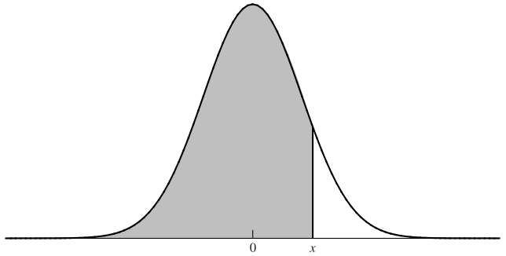

9 Option Pricing - Black-Scholes Model
- HULL, John. Options, futures, and other derivatives. Ninth edition. Harlow: Pearson, 2018. ISBN 978-1-292-21289-0.
- Chapter 15 - the Black-Scholes-Merton Model
- PIRIE, Wendy L. Derivatives. Hoboken: Wiley, 2017. CFA institute investment series. ISBN 978-1-119-38181-5.
- Chapter 4 - Valuation of Contingent Claims
- Black, F., & Scholes, M. (1973). “The pricing of options and corporate liabilities”. Journal of political economy, 81(3), 637-654.
- Merton, Robert (1973). “Theory of Rational Option Pricing”. Bell Journal of Economics and Management Science. 4 (1): 141–183.
Learning Outcomes:
- Understand the foundational principles of the Black-Scholes-Merton model, including its formulation and applications in financial markets.
- Interpret key parameters within the Black-Scholes-Merton model, explore its properties, assumptions and limitations in real-world scenarios.
- Grasp the concept of risk-neutral valuation and its significance in pricing financial derivatives and managing financial risk.
- Analyze the effect of dividends on option pricing within the Black-Scholes-Merton framework and understand its practical implications for investors and traders.
- Discuss the role of volatility in financial markets, specifically how it influences option pricing and investor strategies.
9.1 Black-Scholes-Merton Model
The Black-Scholes model, developed by Fischer Black and Myron Scholes in 1973, is a groundbreaking mathematical framework for valuing European options. It provides a closed-form solution for the price of a European call or put option based on stock volatility, the risk-free rate, the strike price, and the time to expiration. The model assumes a lognormal distribution of stock prices, continuous trading, and no dividends, among other factors.
The Binomial Option Pricing Model, introduced by Cox, Ross, and Rubinstein in 1979, offers a more flexible approach to option valuation, accommodating American options and dividends. It constructs a discrete-time (binomial) lattice for asset price movements, allowing for an iterative calculation of option prices. This model can be viewed as a simplified, discrete approximation of the continuous processes underlying the Black-Scholes model. As the number of steps in the binomial model increases, its results converge to those of the Black-Scholes formula, illustrating their intrinsic relationship. The binomial model’s adaptability to different types of options and its intuitive framework make it a vital complement to the Black-Scholes model in financial theory.
9.1.1 Model Assumptions
The Black-Scholes-Merton model is predicated on several key assumptions to facilitate the derivation of a closed-form solution for pricing European options. These assumptions include:
- European-style Options: The model is applicable to European options, which can only be exercised at expiration.
- No Dividends: It is assumed that the underlying asset does not pay dividends during the life of the option.
- No Arbitrage: The market is efficient, prohibiting the possibility of riskless arbitrage profits.
- Short Selling: Investors are allowed to short sell the underlying asset without restrictions.
- No Market Frictions: The market operates without transaction costs, taxes, or regulatory constraints, implying perfect market conditions.
- Constant Risk-Free Rate: The risk-free interest rate, underpinning the time value of money, is constant over the option’s life and the same for all maturities.
- Known and Constant Volatility: The volatility of the underlying asset’s returns, a measure of its price fluctuations, is known and remains constant over time.
- Geometric Brownian Motion: The price of the underlying asset follows a geometric Brownian motion, characterizing price changes as continuous and random without sudden jumps.
- Continuous Trading and Liquidity: Trading is possible at any moment during market hours, and the asset is perfectly liquid, allowing for immediate buy and sell transactions.
9.1.2 The Black-Scholes-Merton Formulas for Options Pricing
The model provides explicit formulas to compute the price of call and put options, defined as follows:
- \(c\) = price of a European call option
- \(p\) = price of a European put option
- \(N(x)\) = the standard normal cumulative distribution function, representing the probability that a normally distributed variable with a mean of zero and a standard deviation of one is less than \(x\).
- \(r\) = annualized continuously compounded risk-free rate
- \(\sigma\) = annualized constant volatility of the stock returns
- \(S\) = current stock price
- \(K\) = option strike price
- \(T\) = time to expiration (in years)
The core equations are:
\[c = S_0 N(d_1) - K e^{-rT} N(d_2)\] \[p = K e^{-rT} N(-d_2) - S_0 N(-d_1)\]
Where:
\[d_1 = \frac{\ln (S_0 / K) + (r + \sigma^2 / 2)T}{\sigma \sqrt{T}}\] \[d_2 = d_1 - \sigma \sqrt{T}\]
9.1.3 The \(N(x)\) Function
The function \(N(x)\) is pivotal in calculating the probabilities essential for the Black-Scholes-Merton formula. It quantifies the likelihood that a random draw from a standard normal distribution falls below a specific value \(x\). For practical computations, one may refer to statistical tables or the NORM.DIST function in Excel.

Consider an option with the following parameters:
- \(S_0 = 42\) (Current stock price)
- \(K = 40\) (Strike price)
- \(r = 10\%\) (Risk-free rate)
- \(\sigma = 20\%\) (Volatility)
- \(T = 0.5\) (Time to expiration in years)
Using these parameters, we calculate:
\[d_1 = \frac{\ln (42/40) + (0.1 + 0.2^2 / 2) \times 0.5 }{0.2 \sqrt{0.5}} = 0.7693\] \[d_2 = 0.7693 - 0.2 \sqrt{0.5} = 0.6278\]
Employing the NORM.DIST function in Excel for \(d_1\) and \(d_2\) yields:
- \(N(0.7693) = 0.7791\); \(N(0.6278) = 0.7349\);
- \(N(-0.7693) = 0.2209\); \(N(-0.6278) = 0.2651\).
The discounted strike price is calculated as:
\[K e^{-rT} = 40 e^{-0.1 \times 0.5} = 38.049\]
Finally, the call (\(c\)) and put (\(p\))
\[c = 42 \times 0.7791 - 38.049 \times 0.7349 = 4.76\] \[p = 38.049 \times 0.2651 - 42 \times 0.2209 = 0.81\]
9.2 Interpretation of \(N(d_1)\) and \(N(d_2)\)
Understanding the terms \(N(d_1)\) and \(N(d_2)\) within the Black-Scholes formula is fundamental for grasping the model’s insights into option pricing dynamics. These terms provide a probabilistic interpretation that enriches the model’s application and theoretical comprehension.
9.2.1 Interpretation #1
\(N(d_2)\): This term represents the probability that the option will be exercised at maturity. It quantifies the likelihood that the stock price at maturity will exceed the strike price, making it beneficial for the holder to exercise the option.
\(S_0 e^{rT} N(d_1)\): This expression estimates the expected stock price at maturity in a risk-neutral world, adjusting for instances when the stock price falls below the strike price, which are considered as zero value. This adjustment mirrors the option’s payoff structure, where only in-the-money scenarios contribute to the expected payoff.
Expected Payoff and Present Value: The expected payoff of holding a call option can be expressed as \(S_0 e^{rT} N(d_1) - K N(d_2)\). To derive the option’s current value, we discount this expected payoff to the present, yielding the Black-Scholes call option pricing formula: \(c = S_0 N(d_1) - K e^{-rT} N(d_2)\).
9.2.2 Interpretation #2
Another lens to view the call option pricing formula is:
\[c = e^{-rT} N(d_2) \left( S_0 e^{rT} N(d_1) / N(d_2) - K \right)\]
- \(e^{-rT}\): This factor discounts the expected payoff to its present value, reflecting the time value of money.
- \(N(d_2)\): Represents the probability of the option being exercised, acting as a weight for the expected payoff.
- \(S_0 e^{rT} N(d_1) / N(d_2)\): Expected stock price in a risk-neutral world if option is exercised.
- \(K\): The strike price, indicating the cost to exercise the option.
9.3 Properties of the Black-Scholes Formula
The behavior of the call (\(c\)) and put (\(p\)) option prices relative to changes in the underlying stock price (\(S_0\)) is critical for understanding the model’s implications:
- As \(S_0\) increases significantly:
- The call option price (\(c\)) converges to \(S_0 - Ke^{-rT}\), because both \(d_1\) and \(d_2\) grow large, making \(N(d_1)\) and \(N(d_2)\) approach 1. This reflects the option’s intrinsic value, as the benefit from exercise becomes almost certain.
- The put option price (\(p\)) approaches zero, as \(N(-d_1)\) and \(N(-d_2)\) approach zero, indicating a negligible chance of the option being in-the-money.
- As \(S_0\) decreases significantly:
- The call option price (\(c\)) trends towards zero, mirroring the diminishing likelihood of the option being exercised.
- The put option price (\(p\)) converges to \(Ke^{-rT} - S_0\), reflecting the increasing intrinsic value of the option as the likelihood of exercise grows.
9.4 Risk-Neutral Valuation
The concept of Risk-Neutral Valuation is a cornerstone in the field of financial derivatives, offering a powerful framework for option pricing, particularly within the Black-Scholes-Merton model. This approach simplifies valuation by assuming that all investors are indifferent to risk, thereby pricing assets solely based on the risk-free rate rather than the expected return under actual market conditions.
In the derivation of the Black-Scholes-Merton differential equation, an intriguing observation is that the expected return of the underlying asset, denoted by \(\mu\), does not influence the equation. This omission signifies that the equation—and by extension, the option’s price—is not affected by investors’ risk preferences. The remarkable outcome is that the solution to this differential equation remains consistent whether we consider a risk-neutral world or the real, risk-averse world. This observation leads to the principle of risk-neutral valuation, which posits that under certain conditions, the market can be modeled as if all investors were risk-neutral.
This methodological approach allows the valuation of options and other derivatives in a theoretically consistent manner, abstracting away from the complexities introduced by varying risk preferences among investors. The elegance and simplicity of risk-neutral valuation underpin its widespread application in financial economics and the pricing of derivatives.
9.4.1 Key Points of Risk-Neutral Valuation
Indifference to Risk: In a risk-neutral world, investors expect to earn the risk-free rate on all investments, regardless of the risk involved. This assumption is purely theoretical but facilitates the practical application of option pricing models.
Exclusion of \(\mu\): The fact that the differential equation does not incorporate the expected return \(\mu\) indicates the irrelevance of personal risk preferences in pricing derivatives through this model.
Universal Pricing Principle: The risk-neutral valuation framework suggests that the price of a derivative is determined by the expected payoff under risk neutrality, discounted at the risk-free rate.
9.4.2 Application of Risk-Neutral Valuation
Applying risk-neutral valuation to price options involves a straightforward three-step process:
Assumption of Risk-Free Returns: Initially, it is assumed that the expected return on the stock (or the underlying asset) is equal to the risk-free rate. This simplification aligns the future stock price dynamics with a risk-neutral perspective, where all assets are expected to grow at this rate.
Calculation of Expected Payoff: The next step involves computing the expected payoff of the option at expiration. This calculation is performed under the assumption that the stock prices follow a risk-neutral probability distribution, reflecting a world where the expected rate of return on all assets is the risk-free rate.
Discounting at the Risk-Free Rate: Finally, the expected payoff is discounted back to the present using the risk-free rate. This discounting reflects the principle that future cash flows must be adjusted to present value at a rate that reflects their time value of money, devoid of risk premiums.
Consider a call option with a strike price of \(K\), and let’s assume that under the risk-neutral world, the expected stock price at expiration is \(E[S_T]\). The expected payoff from holding this call option can be represented as \(E[max(S_T - K, 0)]\), where \(S_T\) is the stock price at expiration. By discounting this expected payoff at the risk-free rate \(r\), we can calculate the present value of the call option.
9.5 The Effect of Dividends
The inclusion of dividends in the valuation of options introduces additional complexity, as dividends can significantly affect option prices. The adjustment for dividends in the Black-Scholes model and considerations for American call options are pivotal for accurate pricing.
9.5.1 Valuing European Options on Dividend-Paying Stocks
To accommodate dividends in the Black-Scholes model, the stock price is adjusted by subtracting the present value of dividends expected to be paid during the life of the option. This adjustment reflects the reduction in stock price that typically occurs on the ex-dividend date, thereby affecting the option’s intrinsic value. It’s crucial to include only those dividends that are expected to be paid before the option expires, as these are the ones that will impact the option holder.
For a dividend-paying stock, the adjusted stock price \(S_{adj}\) in the Black-Scholes formula becomes:
\[S_{adj} = S_0 - PV(\text{dividends})\]
where \(PV(\text{dividends})\) is the present value of dividends paid during the option’s life. This adjustment aims to capture the expected drop in the stock price due to dividend payouts, ensuring the option valuation accurately reflects this anticipated decrease.
9.5.2 American Calls on Dividend-Paying Stocks
The traditional wisdom that American call options should not be exercised early due to their time value does not always hold in the presence of dividends. The possibility of early exercise becomes relevant when the stock pays dividends.
Criteria for Early Exercise
For an American call option on a dividend-paying stock, early exercise might be optimal just before an ex-dividend date if the dividend amount exceeds the loss of time value from early exercise, specifically if the dividend is greater than:
\[K[1 - e^{-r (t_{i+1} - t_i)}]\]
Here, \(K\) is the strike price, \(r\) is the risk-free rate, and \(t_i\) to \(t_{i+1}\) represents the interval between dividend payments. This condition evaluates whether the immediate gain from capturing the dividend outweighs the potential benefits of holding the option for its time value.
9.5.3 Black’s Approximation for American Call Options with Dividends
Black’s Approximation offers a pragmatic method for approximating the price of American call options on dividend-paying stocks. This approximation involves comparing two European call option prices:
- First European Price: This is calculated for a European call option with the same expiration date as the American option, incorporating the adjusted stock price for dividends.
- Second European Price: This is calculated for a European call option expiring just before the final ex-dividend date within the American option’s life.
The value of the American call option is approximated as the maximum value derived from these two European call options. This method acknowledges the critical influence of dividends on option pricing and provides a practical solution for incorporating this factor into American option valuation.
Black’s Approximation simplifies the valuation process by sidestepping the complex optimization problem of determining the exact optimal early exercise strategy in the presence of dividends. It offers a balance between accuracy and computational efficiency, making it a valuable tool for practitioners in the financial markets.
9.6 Volatility in Financial Markets
Volatility is a pivotal concept in finance, encapsulating the degree of variation in the price of a financial instrument over time. It is central to the valuation of options, where it measures the extent of uncertainty or risk associated with the price change of the underlying asset.
- Definition: Volatility, denoted as \(\sigma\), quantifies the expected variability in the returns of a stock or any financial asset. It reflects the degree of uncertainty or risk about the magnitude of changes in an asset’s value.
- Range: Typically, stocks exhibit annual volatilities in the range of 15% to 60%. This range indicates the expected yearly change in the stock price, highlighting the variability in asset prices across different markets and conditions.
- Impact on Options: The value of an option is exceptionally sensitive to changes in volatility. Since options are derivatives based on the underlying asset, increased volatility translates to higher option premiums, all else being equal.
- Observability: Unlike direct observables like stock prices, volatility is not directly observable and must be estimated. Historical volatility is derived from past market prices, while implied volatility is inferred from current market prices of options.
9.6.1 Historical Volatility
- Calculation: Historical volatility is the standard deviation of the continuously compounded returns of an asset over a specified period, typically annualized. This measure provides a backward-looking estimate of volatility based on actual market data.
- Daily Volatility Example: For a stock priced at $30 with an annual volatility of 25%, the standard deviation of the stock’s price change over one day (\(\Delta t\)) can be approximated as \(25\% \times \sqrt{\frac{1}{252}} = 1.57\%\), assuming 252 trading days in a year. This calculation aids in understanding daily price variability.
- Annualization: By annualizing the standard deviation of daily returns (multiplied by \(\sqrt{252}\)), investors can compare volatility across assets with different time frames.
9.6.2 Nature of Volatility
- Market Hours: Volatility tends to be higher during trading hours compared to when the market is closed, reflecting the immediate impact of news and events on asset prices.
- Trading Days: For options valuation, time is measured in trading days, not calendar days, acknowledging the fact that price changes are primarily driven by market activity. This convention ensures that the time to maturity for options reflects actual market exposure.
9.6.3 Implied Volatility
- Definition: Implied volatility is the volatility implied by the market price of an option, based on the Black-Scholes-Merton model. It represents the market’s expectation of future volatility over the life of the option.
- VIX Index: The VIX S&P 500 Volatility Index is a widely recognized measure of market expectation of near-term volatility conveyed by S&P 500 stock index option prices. The VIX S&P 500 Volatility Index.
- Application: Implied volatility is crucial in options trading, serving as a standard measure that reflects the market’s view on future volatility. It is instrumental in pricing, trading strategies, and risk management.
- Volatility Smile and Surface: The volatility smile and surface graphically represent implied volatility across different strike prices and maturities. Deviations from a flat surface—expected under the BSM model assumptions—reveal market anomalies, such as varying risk preferences and the impact of market events on different options.
- Market Anomalies: The observed curvature in the volatility smile and the dynamic topology of the volatility surface challenge the BSM model’s assumptions, demonstrating real-market frictions and behaviors not accounted for by the model. These phenomena offer valuable insights into the complexity of market dynamics and the factors influencing option pricing beyond theoretical models.
Role of Implied Volatility in Option Trading
- Market’s Perception of Value: Implied volatility reflects the market’s anticipation of future price fluctuations of the underlying asset. Higher implied volatility indicates greater expected price movement and, consequently, a higher option premium.
- Pricing Medium: In options markets, implied volatility is often used as a standard metric to quote prices. A call option priced at $10, corresponding to an implied volatility of 25%, illustrates how traders communicate and gauge option value through volatility levels.
- Valuation of Options: Implied volatility aids in comparing the relative value of options by standardizing price differences attributable to intrinsic value and time decay. Options with lower implied volatility are considered cheaper relative to those with higher implied volatility, offering insights into potential over- or under-valuation.
- Revaluation Over Time: As market conditions and perceptions change, so does implied volatility. Tracking its evolution allows traders and portfolio managers to reassess the value of their positions, adapting strategies accordingly.
- Market Sentiment Indicator: The level of implied volatility reflects market participants’ expectations about future volatility, serving as a barometer for market sentiment.
- Communication Tool: For regulators, banks, and compliance officers, implied volatility serves as a universal language to discuss and assess the risk and valuation of options portfolios.
9.7 Practice Questions and Problems
Name some assumptions of the Black-Scholes-Merton model. Compare with the real world and explain potential issues.
Explain the principle of risk-neutral valuation.
Calculate the price of a three-month European put option on a non-dividend-paying stock with a strike price of $50 when the current stock price is $50, the risk-free interest rate is 10% per annum, and the volatility is 30% per annum. (Tip: Use Excel function NORMDIST to calculate \(N(x)\))
Put option price = 2.37
- What difference does it make to your calculations in the previous Problem if a dividend of $1.50 is expected in two months? (Tip: Use Excel function NORMDIST to calculate \(N(x)\))
Put option price = 3.03
- What is the price of a European call option on a non-dividend-paying stock when the stock price is $52, the strike price is $50, the risk-free interest rate is 12% per annum, the volatility is 30% per annum, and the time to maturity is three months?
Call option price = 5.06
- What is the price of a European put option on a non-dividend-paying stock when the stock price is $69, the strike price is $70, the risk-free interest rate is 5% per annum, the volatility is 35% per annum, and the time to maturity is six months?
Put option price = 6.40
- Consider an option on a non-dividend-paying stock when the stock price is $30, the exercise price is $29, the risk-free interest rate is 5% per annum, the volatility is 25% per annum, and the time to maturity is four months.
- What is the price of the option if it is a European call?
- What is the price of the option if it is an American call?
- What is the price of the option if it is a European put?
- Verify that put–call parity holds.
European call = 2.52 European put = 1.05
What is implied volatility? How can it be calculated?
The volatility of a stock price is 30% per annum. What is the standard deviation of the percentage price change in one trading day?
1-day std. = 1.9%
What is the actual implied volatility of the S&P 500? Try to interpret the value.
A call option on a non-dividend-paying stock has a market price of $2.50. The stock price is $15, the exercise price is $13, the time to maturity is three months, and the risk-free interest rate is 5% perannum. What is the implied volatility?
Implied volatility = 39.6%